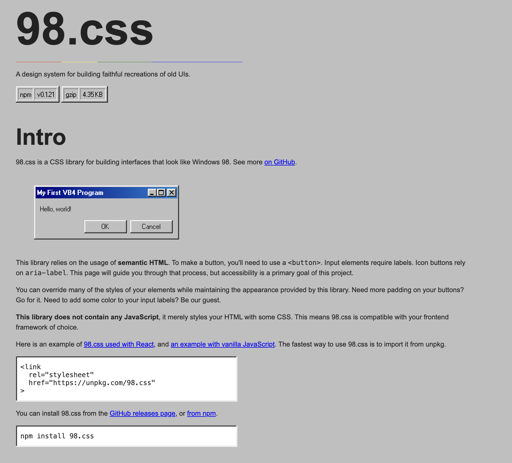

Author note: I am a proponent of AI-assisted programming. There are growing pains, and I'm excited to see what the future looks like. This essay is not a luddite manifesto. Sorry if that makes you angy.
I miss the days when code was written by hand. You probably do too.
Software was a craft. You spent hours, or weeks, working on something. The gratification of the final result was so deep that it filled you with pride to have gone from 0 to 1 (if you made it that far). This reward is increasingly rare, not only in programming, but generally in our world today.
Our brains have slowly been primed for this exact moment in codegen by a decade of social media and the takeover of algorithmic taste-making. Codegen tools slot perfectly into the neural grooves that TikTok and Instagram had already carved.
The Variable Reward Machine
In 2020, a developer named Jordan Scales shipped a CSS library called 98.css. His goal sounded simple enough- recreate the look and feel of the Windows 98 interface using nothing but a stylesheet. No JavaScript. Only CSS that made semantic HTML look exactly like the operating system many of us are nostalgic for.
His tools were a Windows 98 virtual machine and MSPaint for measuring pixels. He hand-drew icons in Figma. He tracked down a copy of the Microsoft Windows User Experience reference manual to nail the exact behavior of button borders. He had the VM on his left monitor and a text editor on his right, and over the course of about two weeks, he shipped it.

When he described the project, he didn't talk about velocity or output. He talked about Pajama Sam and Backyard Soccer. He talked about sitting in front of his family computer as a kid, clicking buttons and reading labels. He said the design system and aesthetic were "an integral part of my early computing story." He said he smiled while building it, and brought some smiles when he shipped it.
You could prompt Claude Code today with "recreate the Windows 98 UI in CSS" and get a passable result in five minutes. It would look approximately right. But it wouldn't carry the weight of a developer who spent two years thinking about button borders before he even started. The output might be similar. The experience of making it and the reward of finishing it, would be fundamentally different.
What TikTok Did to Your Dopamine System
The neuroscientist Wolfram Schultz spent decades studying dopamine neurons in primates. His foundational finding, published in 1997, was that dopamine isn't just signalling pleasure, rather "prediction error", the delta between what you expected and what you got. Dopamine neurons fire when a reward is better than predicted. They stay quiet when reality matches expectation. They depress when things are worse than expected. This is the brain's teaching signal: it makes you seek out unpredictable rewards.
This is exactly what makes slot machines addictive. And it's exactly what social media platforms engineered into their products. Psychologists call it a "variable reward schedule". Unpredictable rewards delivered at irregular intervals. Every scroll might reveal something mildly interesting, occasionally something engaging, and rarely something that feels genuinely important. The unpredictability is the point. Your brain doesn't just respond to the reward; it responds to the anticipation of a reward that might come.
TikTok refined this into what might be the most effective behavioral conditioning system ever built outside a casino. Videos as short as six seconds. An algorithm that learns not just what you like but how long you watch, whether you rewatch, what makes you comment. A never-ending stream of content calibrated to your personal reward profile. fMRI research has shown that this kind of engagement activates the mesolimbic dopamine system, the same network involved in substance addiction.
But the really important finding is what happens after chronic exposure. Clinical practitioners have observed that regular consumption of high-frequency digital rewards appears to shift baseline dopamine functioning. Activities that used to feel rewarding: reading a book, having a conversation, going for a walk, start feeling unsatisfactory. Those activities didn't change; your brain's reward threshold moved. You need more stimulation, faster, to feel the same thing.
We spent years societally marinating our brains in this system... then codegen showed up.
The Scroll and the Prompt
A blog post on nmn.gl titled "Vibe Coding Is Creating Braindead Coders" argues that AI stripped away one of programming's two dopamine hits: the satisfaction of figuring something out. What remains is only the shallow pleasure of working code. Namanyay compares the 30-second wait for an AI response to a variable ratio schedule... the same pattern as slot machines... as TikTok.
I'd posit one step further, codegen doesn't just resemble TikTok. TikTok, and Instagram, and YouTube Shorts, and Spotify Autoplay, and modern Hollywood (think the Minecraft Movie), and a DECADE of algorithmically-optimized variable reward schedules have TRAINED OUR BRAINS to crave exactly the kind of interaction that codegen provides. The compressed feedback loop. The low-effort-to-reward ratio. The unpredictable output from a prompt. The quick hit followed by the next quick hit.
This can be seen in the rapid adoption of codegen tools, not by engineers, but rather by people who had never once previously opened a terminal. GitHub's developer count increased to over 180 million, up from 100 million, with 36 million new additions last year alone, coinciding with the increase in popularity of codegen tooling.
Claude Code is enjoyable in the same way that scrolling Reels is enjoyable. You don't work that hard or for that long, and you get a dopamine hit that feels good to some degree. But just like TikTok, the hits feel qualitatively different from what dopamine has traditionally given the brain. They're shallower. They dissipate faster. They don't stay with you the way that finishing a hard project stays with you.
The Death of the Whimsical Side Project
This is where I feel the loss most acutely.
There used to be a particular species of project on Hacker News: something somebody spent a month building for no commercial reason whatsoever. A CSS library that faithfully recreated Windows 98, an interactive visualization of the deep ocean, a pixel art editor that ran in the terminal. These projects existed because someone had a skill set they'd developed over years, through university, through work, through late nights having fun with a computer (to many of us, the greatest toy we've ever owned). You spent years accumulating capability. You applied that hard-won expertise to something purely delightful purely because you could. Your projects meant more to you, and they even meant more to us.
That was the reward cycle at its most potent. You channeled it into a passion project. The process was slow. You got stuck. You refactored. You measured pixels in MSPaint. And when you shipped it, the gratification was deep and lasting. It was the neurological opposite of a TikTok scroll; a large, delayed reward after sustained effort. The Schultz research shows that dopaminergic neurons actually increase their activity steadily during waiting periods for delayed rewards, meaning the patience itself is part of what makes the payoff satisfying. The struggle isn't a cost you endure to reach the reward. The struggle is part of the reward.
Now scroll Twitter. Everyone is shipping fun little tech demos, mini games, neat visualizations. "Built this in 2 hours with Claude." These would have been genuinely impressive three years ago. Now they're a handful of prompts and a couple hours of iteration. It's slop. The output can be sophisticated. But the cost is so low that the reward barely registers. It's cheap in the way that scrolling past a thousand Reels is cheap... each one briefly entertaining, none of them memorable.
That makes me sad. Probably you too.
The Democratization Paradox
This is the conflicting part.
Code is now accessible to everybody, and that is a good thing. People who could never build software before can now open Claude Code and ship a whole product. I don't want to be a luddite mourning the loss of an exclusive guild.
To me at least, this unbelievably low barrier to entry is part of what changes the feeling. Coding was less accessible, but learning to code was as accessible as it has ever been. It used to be that not that many people could code, simply because they didn't put the work in. Building something cool was an accomplishment that most of the world's population couldn't replicate. When you shipped a painstaking side project, you were exercising a rare skill. That scarcity gave the accomplishment even more weight than the work put into that project.
Complex engineering still requires architecture and deep thinking. But in the pursuit of helping engineers build faster, the "fun side project" was lost as a casualty.
"You can still write code by hand"
Nothing is stopping me from writing a project by hand. Non-GMO certified organic code.
But there's truly no reason to do it. In a world where codegen accomplishes the same thing in 5% of the time, hand-writing code is one of the stupidest things you could do. It's washing clothes by hand when you have a washing machine. You might romanticize the process, but you'd be pretty silly to actually do it.
We can't go back. The craft has largely been lost, and with it the culture too. The dopamine landscape has changed, and we've changed with it.
What Remains
I don't have a tidy prescription. I'm not going to suggest a dopamine detox or practice mindful coding or whatever. I'm sure as hell not capable of a true dopamine detox. The genie isn't going back in the bottle.
That impulse still exists. But the environment that rewarded it, the slow, craftsman's dopamine, is harder and harder to access for many of us.
If you have the strength to escape the Claude Code dopamine hell you may be in, there is a light at the end of the tunnel. The bar for craftsmanship has simply increased. Painstakingly measuring the spacing of Windows 98 buttons isn't a valuable use of time anymore. But questioning design decisions, exploring new technologies, asking yourself "why does this work the way that it does", and breaking out of the gradient descent that gives you the most statistically probable answer (using Next.js in your side project), all give you the potential to seek that traditional, well-earned reward.
Recently, I spent a few months building braelyn.ai. It was an LLM driven project, but I put painstaking effort into crafting an environment that fit my vision for my personal website. An utterly useless way to spend my time, and yet my favorite side project in recent years.
With codegen, you can go deeper, build more complex systems, understand every aspect of the tech stack you are working with, push into new paradigms you never thought you would touch. There is so much to unlock with codegen if you can just escape the dopamine hell we have collectively fallen into.
Note: AI tools were used to assist me in writing this. Is that hypocritical? Idk maybe. I did my best to adhere to the principles listed above and craft a piece truly from my heart and my brain, but lean on research tools more capable than I am.